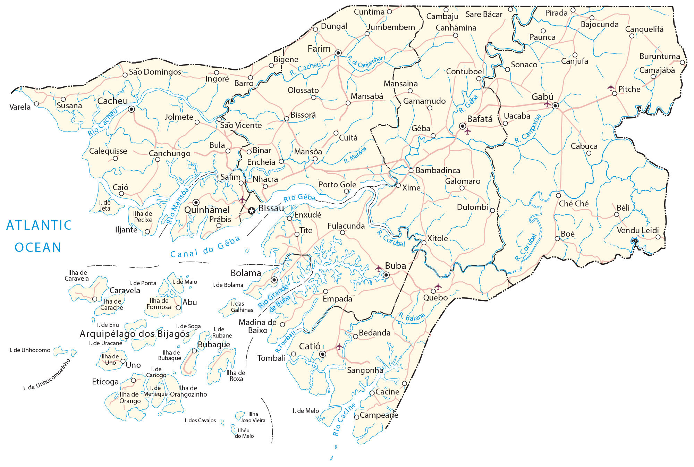

Guinea-Bissau is an African country located on the west coast of the continent. It also includes the Bissagos Islands, an archipelago of about 88 islands in the North Atlantic Ocean. It borders just two countries. While Senegal is situated to the north, Guinea is to the southeast. The city of Bissau is the capital and largest city in the country. Other major cities are Bafatá, Gabú, and Bissorã.
Guinea-Bissau occupies an area of 36,125 square kilometers, which is larger than Lesotho, but smaller than Togo. This also includes the Bijagos Archipelago which is a group of 88 islands that lie off of the mainland.
Go back home